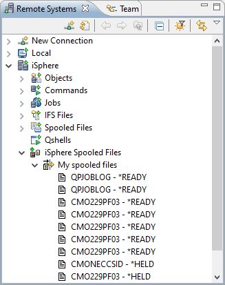
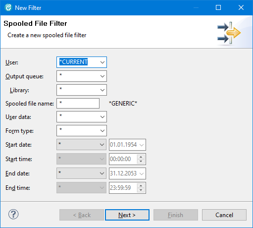

Spooled File Subsystem
Use the iSphere Spooled File Subsystem to view and manage the
spooled files on an IBM i server:
- Show the spooled files in the RSE Tree View using filters.
Filter criteria are user, output queue, user data and form type.
- Open a spooled file in Text, HTML or PDF Format.
- Save a spooled file in Text, HTML or PDF Format.
- Search (Ctrl+F) opened spool files in all formats.
- Print (Ctrl+P) opened spool files in all formats.
- If desired, use your own tools for conversion of spooled
files to Text, HTML and PDF (See Preferences).
- Hold a spooled file.
- Release a spooled file.
- Change spooled file attributes.
- Reply to a message for a spooled file.
- Display spooled files attributes in the Eclipse properties
view.
The iSphere Spooled File Subsystem integrates into the Remote
Systems Explorer as shown below.
Double click on a spool file to open it. (See Preferences
to set either Text, HMTL or PDF as the default format.)

Use the iSphere Spooled Files context menu (right click) to
create spooled file filters.

Use the context menu (right click) of a spooled file to perform
actions on it:
The Open as... and Save as... menu options let you
select the format in which to open or save the spooled file: